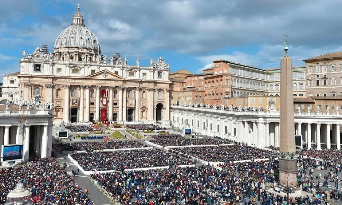

Вештачката интелегенција влезе во Ватикан
Ватикан лансираше нови услуги со вештачка интелигенција за базиликата Свети Петар, обезбедувајќи виртуелен пристап до нејзините архитектонски богатства од ренесансната ера. Новите искуства беа претставени во понеделник, на време за одбележување на Светата година, односно јубилејот на Католичката црква во 2025 година, кој се слави секој четврт век.
Свети Петар е како ѕвезденото небо во летна ноќ: маѓепсани сте од неговата сјајност, изјави кардиналот Мауро Гамбети и истакна дека новите алатки ќе се однесуваат како телескоп или вселенски брод.
Во соработка со технолошката компанија Microsoft и Iconem, компанија специјализирана за дигитализација на локации со наследство, Ватикан лансираше нова интерактивна веб-страница, дигитална реплика на базиликата и две изложби создадени од вештачка интелигенција.
Создаден е 3Д модел на базиликата со скенирање со помош на дронови, камери и ласери. Алгоритмите за вештачка интелигенција ги составија, елаборираа и финализираа податоците. Беспилотните летала снимаа ноќе четири недели, правејќи над 400.000 фотографии и собирајќи податоци еквивалентни на ДВД полица висока шест километри.